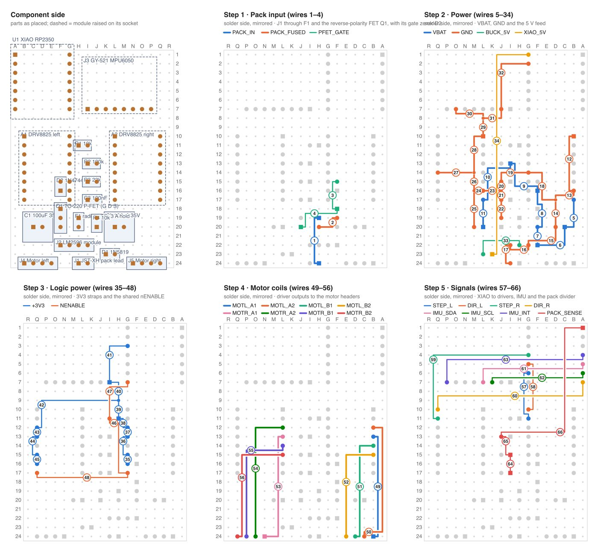
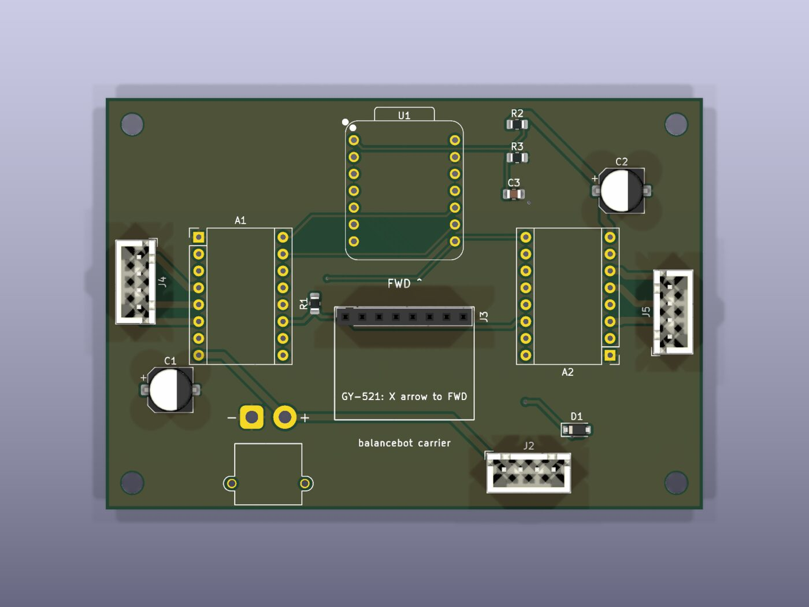
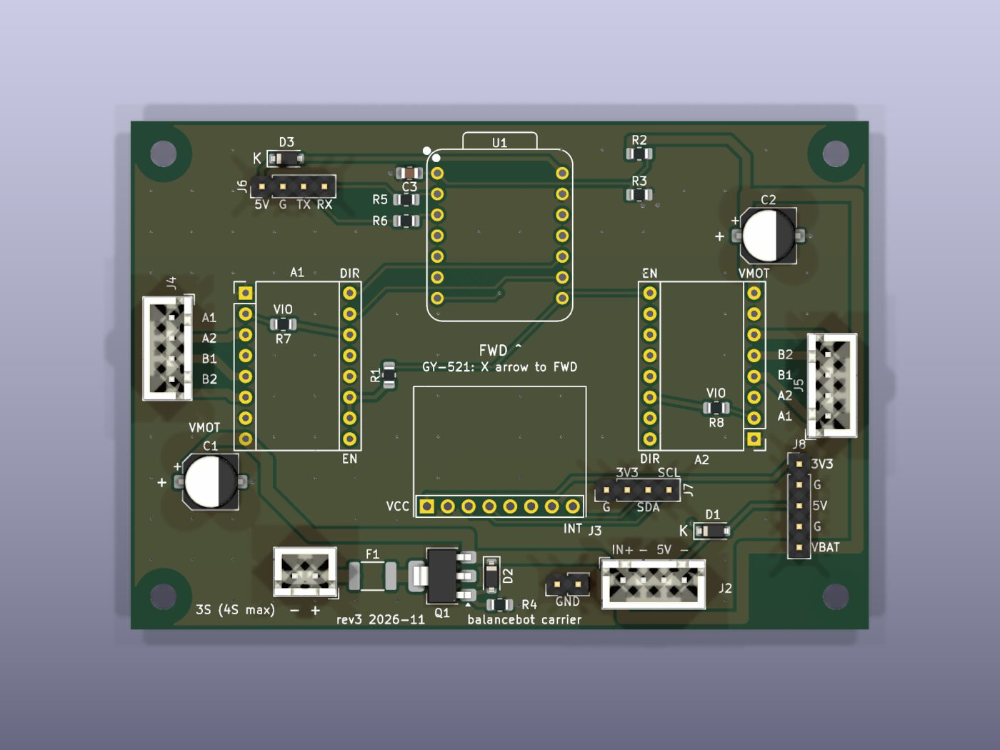
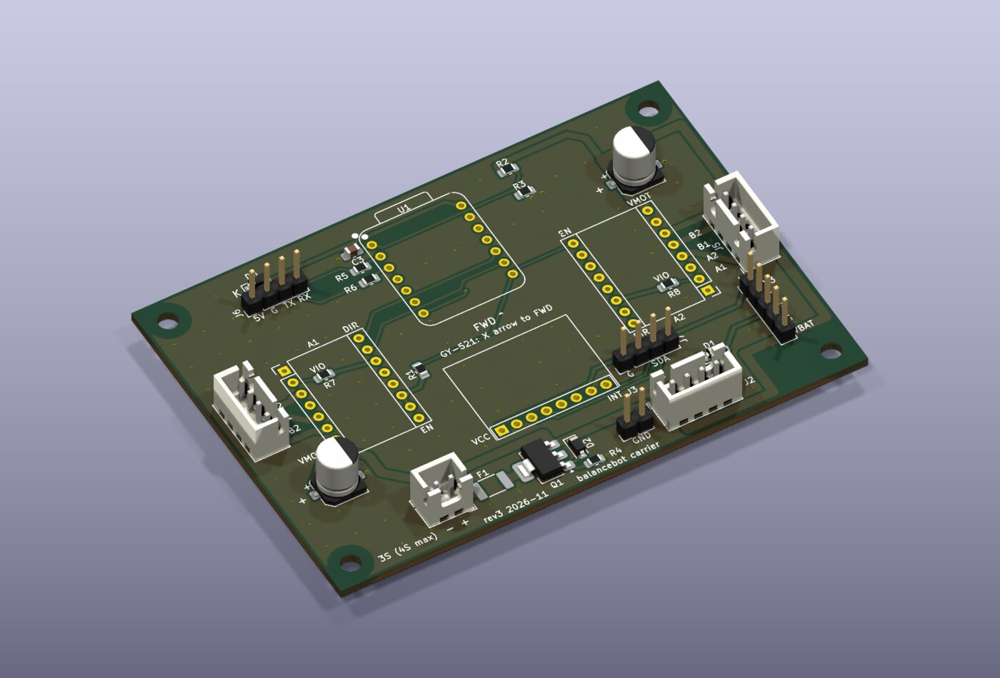
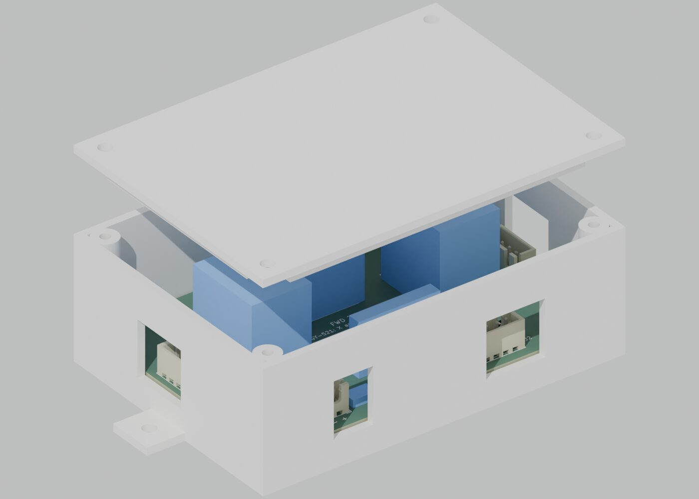
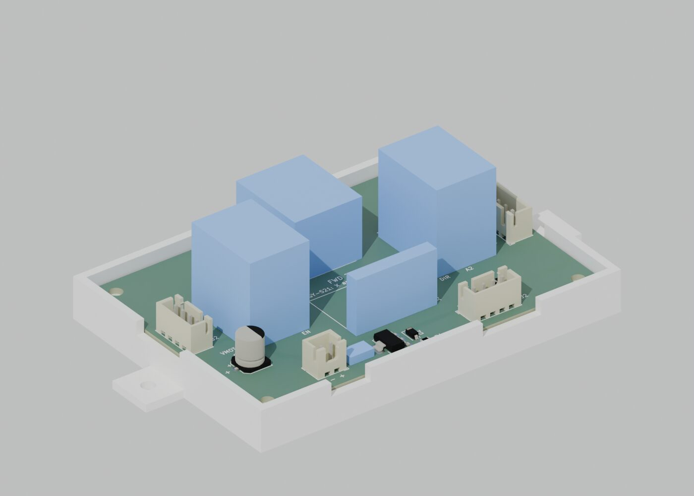

01 · Why build it
A robot that is always falling
A balancebot has only two wheels, side by side on one axle. Left alone it simply falls over. It stays up the way you keep a broom standing on your palm: it notices which way it starts to tip and moves underneath it, quickly and all the time.
This one was built to learn exactly that trick, with a small computer, a chip that feels tilt, and two very precise motors.
Two wheels, a tall body and the battery on top. The robot is always falling a little; a sensor measures the lean hundreds of times a second and the wheels roll under the fall to catch it.
It is also the first project in this repo that does not run on an ESP32 chip. It uses a Raspberry Pi RP2350 on a thumb-sized Seeed XIAO board, and stepper motors, the kind 3D printers use, which turn in exact small steps.
An inverted pendulum on wheels is the textbook hard real-time control problem. Every 2 ms, without exception, the firmware reads a sensor, estimates an angle, computes a correction and moves the motors, while a USB console stays responsive for live tuning.
Nothing else in the repo did closed-loop motion control (the robocar drives DC motors open loop) or ran on non-Espressif silicon, and the parts for a balancer were on hand and idle.
From PRD-012: a XIAO RP2350, an MPU6050 IMU, two DRV8825 stepper drivers and two NEMA17 steppers. Goal: balance untethered for minutes and recover from small pushes, with live tuning over USB CDC and gains kept in flash. Out of scope for v1: driving around, wireless (the XIAO RP2350 has no radio), wheel encoders and OTA.
It also brought the Pico SDK into the monorepo (ADR-018): a build container, shared recipes in tools/pico.just and a reusable CI build for later RP2040/RP2350 projects.
Seeed XIAO RP2350 (dual Cortex-M33, single-precision FPU, PIO), a GY-521 (MPU6050) on I²C, two Pololu-format DRV8825 carriers at 1/8 microstep, NEMA17s, a 3S 18650 pack behind a BMS (#744) and an LM2596 buck to 5 V. Pico SDK 2.2.0, pinned in Dockerfile.pico and _ci-build-pico.yml.
ADR-018 rejected arduino-pico (it hides PIO and multicore), MicroPython (GC pauses at 500 Hz), Zephyr (a third build system for a two-task firmware) and the MPU6050’s DMP (an opaque blob capped at 200 Hz); a complementary filter is ten inspectable lines.
02 · Timeline
From first firmware to standing still
The program came first, in July. The robot first stood up on its own on 23 November, at the end of a long day of small adjustments.
July: the program and the wiring plan. October: a smarter way of balancing, a factory-made circuit board and a case. November: a corrected board design, the first tests on the real robot, and the day it balanced.
From git log over the project: the firmware and the Pico SDK infrastructure land in one PR in July; October adds the LQR and the generated carrier board; November is bring-up, most of it on 22–23 November.
Dates are merge dates; references are pull requests and issues in laurigates/mcu-tinkering-lab. The hardware pipeline (hardware list, generated carrier, perfboard, cases) is shared with the robocar; the balancebot carrier was the first board it generated.
The 23 November bench run alone merged #1236, #1242, #1243, #1244, #1245, #1246, #1247, #1248, #1255 and #1257.
- Jul 2Firmware, Pico SDK container and CI#355 · PRD-012 · ADR-018
- Jul 3A wiring schematic#364
- Oct 12A second controller, switchable while balancing; a printable build guideLQR #743 · build guide #740
- Oct 13–14A circuit board, then the same board generated from the hardware list#749 #753 #759
- Oct 13–24A perfboard layout with step-by-step build sheets#754 #760 #828 #858
- Oct 23Printed cases; boards orderedtools/enclosure #839
- Nov 6The delivered boards need the sensor upside down: a firmware setting, and a corrected rev3 design#971 #972
- Nov 9–12Refuse to start when the setup looks wrong#1014 #1041 #1118
- Nov 20A bring-up checklistBRINGUP.md #1225
- Nov 22–23Bench session: a sign bug, then tuning; it stands within about a centimetre#1242 #1244 #1246
- Nov 23Drive and turn while balancing, not yet tried on the robot#1257 · bench test #1256
03 · The physics
Falling, caught 500 times a second
Try balancing a pencil on your fingertip: almost impossible. A broom is easy. The taller the thing, the slower it falls, and the more time you have to move under it. The robot works the same way, with the heavy battery up high to slow its fall.
It never really stands still. It tips a tiny bit and corrects a tiny bit, too small and too fast to see.
The robot is an upside-down pendulum. When it leans forward, the wheels roll forward to get back under the weight; when it leans back, they roll back. A motion-sensor chip, like the one that turns a phone’s screen, measures the lean 500 times a second.
Two things make it hard. The correction has to come quickly and on a steady beat. And the sensor is noisy, and gets confused when the robot itself speeds up or slows down.
The state is four numbers: lean angle, lean rate, wheel position and wheel speed. The controller outputs wheel acceleration, not speed; the firmware integrates it into a step rate. A sign wrong anywhere and the robot drives away from every fall.
The angle fuses two sensors. The gyroscope is smooth but drifts; the accelerometer is absolute but noisy and fooled by motion. A complementary filter trusts the gyro over short times and the accelerometer over long ones.
Linearised, θ̈ = (g·θ − u) / Leff, with u the wheel acceleration and Leff the equivalent pendulum length (ADR-026). The open-loop falling pole is at √(g/Leff): about 6.8 rad/s for the robot’s 0.21 m.
Complementary filter: angle = α·(angle + gyro·dt) + (1 − α)·accel_angle. α is a time constant in disguise, so the right value depends on the loop rate (#1244).
Accelerometer pitch is atan2(−afwd, aup): it reads the reaction to gravity, so leaning forward tips the forward axis down (#1242). The gyro term integrates ωy. With τ = α·dt / (1 − α) at dt = 2 ms, α 0.98 gives τ ≈ 0.1 s and α 0.996 τ ≈ 0.5 s (computed from the formula). Below τ the accelerometer’s share reads the robot’s own acceleration as tilt.
The mount mapping and the pitch trim are applied to every sample before the filter: imu_filter.c, with the at-rest thresholds (IMU_STILL_*) in imu_filter.h.
04 · Inside the chip
Two cores and a pulse machine
The little computer has two brains. One does nothing but balance, on a strict beat, and never gets distracted. The other talks to the laptop, blinks the lights and does the slow sums. A third, tiny helper inside the chip makes the motor pulses by itself, exactly on time.
The RP2350 chip has two processor cores. Core 1 runs the balance loop 500 times a second and nothing else. Core 0 handles the USB link to a laptop, where you type commands and watch live numbers.
Stepper motors need a stream of precisely timed pulses, thousands per second. The chip’s PIO, a tiny programmable pulse generator, makes them in hardware, so a busy USB connection never makes a wheel stutter.
Two cores, two jobs, one rule: the control loop never blocks and never prints. Core 0 sends commands through a lock-free queue; core 1 publishes its state through a snapshot that core 0 reads for telemetry.
The logic that can be pure is pure C with no SDK includes (PID, filter, LQR solver, flash record, CLI gates, drive mixing), so ten host test suites run on a laptop and in CI without the board.
| Where | What |
|---|---|
| Core 1 | 500 Hz: IMU burst read → filter → PID or LQR (output: wheel acceleration) → integrate to step rate → PIO periods. Tilt cutoff, watchdog, flash saves. |
| Core 0 | USB CDC CLI, CSV telemetry, LEDs, battery ADC, LQR gain solve. |
| PIO0 SM0/SM1 | Step pulse trains, 30–20 000 steps/s, cycle-accurate, holding the last rate between updates. |
Core 0 → core 1 is a pico_util queue of commands; core 1 → core 0 a seqlock’d snapshot (ipc.h).
Step pulses come from stepper.pio; rate changes go only through stepper_set_rate(), which owns the acceleration slew and the direction-reversal rule. ADR-018 rejected PWM-slice and timer-IRQ stepping because both jitter under USB load.
A flash erase stalls XIP on both cores, so CMD_SAVE is gated to IDLE and FAULT, and the parameter store stays off the last sector, which UF2 downloads erase (RP2350-E10). Core-1 sources build with -Wdouble-promotion; double-precision maths lives on core 0.
05 · Control
Two controllers, swapped mid-balance
There are two different recipes for deciding how hard to push the wheels, and the robot can switch between them while balancing, without a wobble. The robot ended up using the second, more mathematical one.
The first controller (PID) reacts to how far the robot leans, how fast, and for how long. It is simple, but finding good settings takes a lot of trial and error. The second (LQR) starts from a model of the robot, its height and wheel size, and works out the best response mathematically.
Change a setting over USB and the robot recalculates; the new behaviour starts on the next beat.
A PID cascade and an LQR, switchable live and bumplessly (ADR-026). Both output wheel acceleration, so the motor path is shared. PID → LQR resets the position reference to where the robot stands; LQR → PID pre-loads the PID’s integral so its first output equals the LQR’s last.
Core 0 solves the LQR gains at boot and on every model change; core 1 receives all four gains in one queue item, so it never runs a tick on half-updated gains.
Exact zero-order-hold discretisation at dt = 1/500 s; the Riccati equation is solved by the structure-preserving doubling algorithm in double precision. Every set re-solves K and prints K, the closed-loop spectral radius ρ (must be below 1) and the residual. A failed solve rejects the change and leaves the parameter and K as they were. K is never stored, only the model and weights it comes from.
The default PID gain turned out far too weak to catch a fall with these wheels (#742), so the robot was tuned on the LQR.
u = −K·[θ, θ̇, x − xref, ẋ], scaled to steps/s² by steps_per_rev / (π·d) and clamped to ANGLE_PID_OUT_MAX (40 000 steps/s², config.h). The solve needs about 2.1 KB of stack, so core 0 gets the whole 4 KB SCRATCH_Y bank. It is host-tested against a scipy reference (lqr_reference.py).
Fail closed: core 1 always boots on the PID and refuses ctrl lqr without a K; a saved LQR mode whose boot solve fails falls back to the PID, and both the boot banner and stat say so.
06 · Safety
Motors off unless asked
Two strong motors on a robot that falls over need rules. The motors stay off until someone asks for them. If the robot tips too far, it gives up and switches them off. If the program ever freezes, the chip restarts with the motors off.
The motors start only when you type arm, or hold the robot upright for three seconds. Past 45° of lean it cuts the power. If the setup looks wrong, for example the sensor reads upside down, it refuses to start and says why.
A coloured light guides your hand to upright: yellow when close, green and brightening inside the window, solid green while balancing, purple while auto-start is paused.
Safe by construction rather than by good behaviour: a resistor holds the motor drivers’ enable line at “off”, so boot, reset and the bootloader all leave the motors disabled. A hardware watchdog fed only by the control loop reboots a wedged loop into motors-off.
The console refuses instead of printing OK. arm, mount and load are judged after the commands typed before them have reached core 1, and each refusal says what to do next (#1041, #1118).
- nENABLE has an external 10 kΩ pull-up to 3V3.
- Tilt cutoff: |pitch| > 45° → FAULT, cleared after 2 s upright.
- 100 ms hardware watchdog, enabled at the first arm.
armis refused when the IMU at rest reads body Z below −0.5 g, more than 120° from upright: the mount setting does not match the board (#1014).- Auto-arm: inside ±3° for 3 s, held off after
disarmortrim capture(#1243, #1255); the RGB LED shows the window (#1248).
The arm and mount decisions live in pure C (arm_gate.c, cli_gate.c) so the host suites cover them. “At rest” means |a| = 1 g ± 0.15 g and gyro under 10 °/s. main.c drives nENABLE high before anything else initialises.
I²C transfers are bounded to 1 ms, and a held SDA is freed with up to nine SCL clocks and a STOP (#1236). Before that, a reset mid-read could leave the MPU6050 holding the bus across a USB-powered reboot, and core 1 hung before its loop with stat showing tick 0.
07 · One list, every drawing
The circuit board comes from the same list as the docs
The robot’s wiring is written down in one list. A program reads it and draws the wiring diagram, prints the build guide, lays out a board you can solder by hand, and designs the factory circuit board. Change the list and everything changes together.
The same idea as on the robocar: one file, hardware.toml, says which part each wire goes to. From it come the wiring tables, a schematic drawing, a printable build guide, a layout for hand-soldering on perfboard, and the factory circuit board.
The balancebot was the first project whose circuit board came out of that list.
hardware.toml joins the firmware’s pin header with a parts registry (ADR-021). The first carrier (#749) was a hand-built netlist that restated the join, and nothing in CI read it. It drifted: a battery divider was wired to a pin the header called spare, and the check still passed.
#759 replaced it with a generator, tools/kicad (ADR-027), and a CI check that needs no KiCad.
The project’s hardware.toml is 675 lines. Generated from it: the WIRING.md tables, the schematic drawing, the Typst build guide (#740), the carrier schematic and netlist, and a perfboard layout with one panel per build step and wires routed over free holes (#754, #857, #858), plus a 1:1 print and continuity checklist (#828). A carrier part without a purchase source fails CI (#885).
just balancebot::carrier-check writes balancebot-carrier.check.json only when ERC, DRC with a guarded schematic-parity step, netlist parity and the board check all pass. The guard exists because kicad-cli pcb drc --schematic-parity exits 0 when it cannot find the schematic. CI re-derives the stamp’s hashes without KiCad.
The schematic writer is stdlib-only with uuid5 UUIDs, and its output is byte-identical on Python 3.11, 3.13 and 3.14 (#759).

08 · The boards arrive
The board that came back was not the one in the repo
The circuit boards came back from the factory, and they were the wrong version: an early draft that had been sitting in the online shopping cart for ten days. On that draft the tilt sensor only fits upside down.
Instead of ordering again, the program learned one new setting: “the sensor is fitted upside down”.
The boards from the 23 October order turned out to be a draft from 13 October, not the finished design. It has no fuse and no protection against plugging the battery in backwards, and its sensor socket is reversed: fitted the right way up, the sensor’s pins land on the wrong signals.
The fix was in software. Fit the sensor upside down, so the wiring is right, and tell the firmware with one command, mount down.
A provenance bug, not a design bug: the factory built an upload that had been left in the cart since 13–14 October, while the hand-off notes recorded the zip on disk.
The fix had two sides. The firmware gained a mount setting stored in flash (#971) and refuses to arm when the mount does not match (#1014). The pipeline now prints the git commit on the board’s silkscreen and in every fab file name (#1016), and the ordering skill checks each cart line’s commit against the hand-off CSV.
The delivered layout is commit 8d18cd8d (#753, 13 Oct): an XT30 input with no polarity printed, 7 SMD parts, no F1, Q1, D2 or R4 (so no fuse and no reverse-polarity protection), R3 27 kΩ, and J3 on the front edge of the GY-521 outline. Fitted component side up, the module’s VCC lands on INT.
Fitted component side down and hanging rearward the wiring is right, but that is a 180° turn about the axle: accel X and Z invert while gyro Y does not. A sign constant cannot fix that (a level board reads about 180°), so it became a setting.
JLCPCB order W2026102320533303, PCB line Y5-13829495A, file balancebot-carrier-fab_Y5. Identified from the order history’s thumbnail against renders, then confirmed by hand: the F1, Q1, D2 and R4 footprints are absent (README.md, “Revision”).
mount down negates accel X and Z before the filter and is stored from PARAM_VERSION 3. #1020 gates the IMU mount against the layout, and #1022 requires silkscreen orientation marks on every module socket: J3 fits its socket three wrong ways.


09 · rev3 and a case
The corrected board, and a box built around it
The corrected design, version 3, has the sensor the right way up and adds a fuse, protection against a backwards battery, and spare plugs for future add-ons. A 3D-printed box is made to fit the board exactly.
rev3 is 90 × 62 mm. Every module plugs into a socket, so a broken one swaps out without soldering. Besides the fixes it adds an expansion plug, a connector for more sensors, and test points for checking voltages with a meter.
The case is generated from the finished board, so it knows where every socket and connector sits. The robot itself still balances on the delivered boards.
rev3 is the design on main; the robot runs on the delivered boards. Cases come from tools/enclosure, which builds them in build123d from the routed board (#839, #842).
rev3 (#972) adds expansion header J6 (5 V through D3, GND, D2, D1, with series resistors R5 and R6), an I²C tap J7 in Qwiic order, supply test header J8, ground post J9 and the drivers’ VIO links R7 and R8, and changes R3 to 22 kΩ so D0 can read a 4S pack. From #822: a 3 A PTC (F1), reverse-polarity P-MOSFET Q1 with D2 and R4, a JST-XH pack input and stitching vias.
Two layers, SMD passives on top (hand-solderable 0805 and SOD-123), sockets and connectors through-hole. rev3 copper: 247 track segments, 95 vias, 2 zones, 32 footprints. Q1 ZXMP4A16G, D2 BZT52C15, F1 BSMD1812-300-24V. D1 (B5819W) keeps USB from back-feeding the buck, so the buck is set to 5.0–5.3 V. The pack divider R2/R3 (100 k / 22 k) feeds GPIO26 (ADC0) with C3 100 nF at the pin.



10 · Bring-up
Forward meant backward
Before the motors could move, a checklist: set the power supply to the right voltage, limit how much power each motor can draw, and check that “forward” means the same thing to the sensor and to the wheels.
That last check found a real mistake. Tilting the robot forward read as leaning backward, so it would have driven away from every fall.
The steps: set the voltage regulator to 5 V before connecting the computer, set each motor driver’s current limit with a small screwdriver, then tilt the robot and read the numbers.
Tilting forward read as leaning back. The cause was a sign error in how the accelerometer’s reading became an angle. The automated test had the same mistake built in, so it agreed with the code and passed.
BRINGUP.md covers the buck, the driver straps, Vref and the signs. The sign check failed: tilting toward FWD read negative. The accelerometer half of the filter used atan2(forward, up) while the gyro half was right, so the two halves disagreed (#1242).
The host test’s physics helper had made the same mistake. The repo’s testing rule now says a physics model in a test must come from the physics and be checked on hardware once (#1247).
Other findings from the same bench: plug in USB before the pack, because the XIAO’s 5V pin is VBUS and a powered VBUS kept a MacBook from enumerating (#1230); an unsaved set is lost on reboot; and wheels in the air run away by design, since the controller keeps trying to catch a fall it cannot stop.
Vref starts at 0.4 V (0.8 A per phase at 2 × Vref) and never exceeds rated current / 2. Straps: M0 and M1 high, M2 low for 1/8 step; nENABLE high while disarmed. Never plug a motor in with VMOT live.
The fix flipped one sign, to atan2(−afwd, aup); IMU_PITCH_SIGN stayed +1. As a control, the old expression aborts the new test, test_accel_and_gyro_agree_falling_forward. On the robot the same resting pose went from +96.74° to −96.68°.
11 · Tuning day
From falling in 15 seconds to holding its spot
Then tuning: round after round of “record 20 seconds, look at the numbers, change one setting”. In one day the robot went from falling over within 15 seconds to standing in place, wandering about a centimetre.
Each round recorded 20 seconds of data while the robot balanced on its own, and a script read it and named the next change. Two settings did most of the work: telling the controller to be gentler with the motors, and trusting the gyroscope for longer. One more corrected for the robot’s balance point sitting 5.5° off vertical.
The loop is capture, analyze, one live change, repeat (#1245, #1246). analyze maps symptoms to settings: time at the acceleration clamp → raise r; a rock near the pendulum frequency → raise alpha; position held but mean angle off zero → add it to trim. The procedure is also a project skill, balancebot-tuning, so the next session starts from it (#1247).
With the default r 0.04, K’s angle gain alone reaches the 40 000 steps/s² clamp at 2.2° of lean, so the robot spent half its time against the clamp. r 10 moves that point to 10.8°. Past r ≈ 10–50 only the position hold keeps weakening (just balancebot::lqr-sweep). The old α 0.98 let the accelerometer read the robot’s acceleration as tilt, which showed as a rock near √(g/L) (#1244).
K at r 0.04: −134, −14.5, −23.9, −26.4; at r 10: −27.0, −3.9, −1.56, −2.42. Beyond r ≈ 10–50 the angle poles stop at the mirror of the falling pole, −√(g/L). The least-squares fit-leff (#1234) did not work on real captures (R² 0.13 and 0.06): a well-tuned robot moves too little to fit and a badly tuned one sits at the clamp. leff came from geometry instead: 24 cm tall with three 18650s on top puts it near the axle-to-battery distance, 0.21 m; the wheels are 65 mm. The −5.47° trim came from trim capture (#1233).
How far it wandered, one 20 s capture each
Position range during the capture. *A 10 s capture.
| Settings | Angle RMS | At clamp | Peak speed | Position range |
|---|---|---|---|---|
| r 0.04, α 0.98 | 3.69° | 48 % | 4000 steps/s (limit) | 39 cm |
| r 10, α 0.98 | 1.40° | 0 % | 1164 steps/s | 4.5 cm |
| r 10, α 0.996 | 0.23° | 0 % | 470 steps/s | 2.0 cm |
| + trim −5.47° | 0.25° | 0 % | — | 1.2 cm (10 s) |
# one round of the loop just balancebot::capture 20 # 20 s at 100 Hz → tmp/balancebot/capture-<time>.csv just balancebot::analyze <csv> # names the next change just balancebot::cli "set r 10" # live; re-solves K, prints K and rho just balancebot::cli disarm save # once it holds
12 · What’s next
Driving by leaning
Standing still was the first goal. The newest program also lets the robot drive forward and back and turn while it balances. That has not been tried on the real robot yet.
To move forward, the robot doesn’t just push its wheels forward: it leans forward first, and the wheels follow to catch it. The new drive command moves the point the robot is trying to stay over, and the balancing does the rest. A turn is the same trick with one wheel a little faster than the other.
drive <m/s> [turn] [seconds] (#1257) moves the reference the balance law tracks instead of adding a motor command, so the lean comes from the law itself. Turn is added to one wheel and subtracted from the other after the law, so the mean wheel rate the law sees is unchanged. The bench test is #1256.
Limits: speed at most ½ max_rate (about 0.35 m/s), turn at most ¼ (about 0.18 m/s per wheel), speed ramp 1000 steps/s² (about 1° of lean). A drive stops after 2 s by default and 30 s at most, is cleared on every state change, and core 1 accepts it only in RUN. The LQR regulates x − xref and ẋ − vref, with xref held within 5 cm of the wheels.
13 · Who did what
Claude writes and checks; Lauri measures and decides
Claude Code, an AI coding assistant, wrote the program, the tests and the circuit-board generator. Lauri built the robot, measured things with a multimeter, held it upright, and decided what to try next. Each bench session ended with its lessons written down, so the next one starts further ahead.
Claude did the parts a computer can check: code, tests, generated drawings and the automatic checks. Lauri did the parts that need hands and eyes: soldering, measuring, holding the robot, judging whether it looked right.
What was learned at the bench became written instructions: a bring-up checklist, a tuning procedure, and short commands for every step.
| Layer | Here | Job |
|---|---|---|
| Skills | balancebot-tuning, carrier-pcb, enclosure-cad, jlcpcb-order | A whole workflow and its traps |
| Recipes | just balancebot:: cli, stat, capture, analyze, lqr-sweep | The bench interface, the same for Lauri and Claude |
| Gates | host tests, carrier-check, build-guide-check | CI that fails on drift |
| Docs | BRINGUP.md, the README’s tuning loop | The procedure; the skill links to it |
The bench interface is the CLI over USB CDC. The recipes (#1229, #1234, #1245) made it scriptable: Claude sends commands and reads captures, Lauri holds the robot and says what it does. Every number in the tuning table comes from a capture in that session.
SKILL.md carries the loop and the bench traps; CLAUDE.md the core-1 rules (no printf, no flash in RUN, no double maths); testing.md the physics-model rule from #1242.